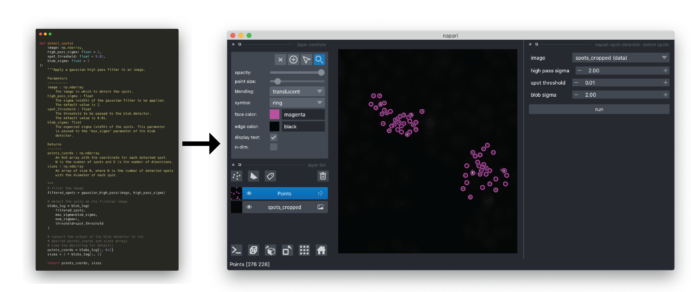

Creating a napari plugin¶
Overview¶
In this tutorial, we will make a napari analysis plugin from the detect_spots() function we wrote in the first part of this practical session. The primary steps in making a napari plugin are as follows:
choose which hook specification(s) your plugin requires
create your repository using the napari cookiecutter template
implement the hookspec(s)
share your plugin with the community
In the following sections, we will work through steps (1) - (3) and we discussed the process for (4) during the lecture.

Choosing a hook specification¶
A hook specification or “hookspec” is a definition for a function that napari uses for a specific type of plugin. In other words, the hook specification defines what napari provides to napari (e.g., data and parameters) and what the plugin returns to napari. napari is then able to use the functions meeting the hook specification to carry out the plugin tasks. The current categories of napari hook specifications are described below. Please see the hook specification reference for more details. Many plugins will implement multiple hookspecs to provide all of the required functionality.
reader: allows loading of specified data formats into napari layers
writer: this allows layer data to be written to disk in specified formats
sample data: allows developers to provide users with sample data with their plugin.
dock widget: allows custom Qt widgets (GUIs) to be added to napari
function: the developer provides a function and napari automatically generates the GUI to both set the inputs parameters for the function and run the function.
In this tutorial, we will create a spot detection plugin by implementing the function hookspec with the spot detection function (detect_spots()) we created in the first part of this practical session.
Using the cookiecutter template to create your plugin repository¶
To make creating the creating plugins easier, we provide a template that automatically builds most of the infrastructure for your plugin, so you can focus on implmenting the details unique to your plugin. The template is implemented using a command line utility called cookiecutter. In the following steps, you will build your plugin directory using the cookiecutter template.
First, open your terminal and navigate to your Documents folder.
cd ~/Documents
Next, activate the conda environment you created in the first part of the tutorial. This environment includes all of the packages required to make your plugin (including cookiecutter).
conda activate napari-tutorial
In this next step, we will use cookiecutter to create a repository for our plugin from the template. cookiecutter will ask a series of questions that that will customize the repository for your plugin. Once completed, the repository will be created in your current directory.
cookiecutter https://github.com/napari/cookiecutter-napari-plugin
You will be asked for some information to customize the setup of your plugin. Each prompt gives the default value in square brackets ([]). The questions are explained below. Enter your answer after the prompt and press enter to continue.
full_name [Napari Developer]: enter your name here. Names entered here will be listed as the authors of the plugin in the package metadata.email [yourname@example.com]: this email will be listed as the contact information in the package metadatagithub_username [githubuser]: if you have a github username, you can enter it hereplugin_name [napari-foobar]: enter the name you would like your plugin to be called. spaces are not allowed and are often replaced with-(e.g.,napari-spot-detector).Select github_repository_url:this is used for plugin metadata and is not required now. If you don’t plan to upload it to your github, select 2.module_name [napari_foobar]: this is the name of the module containing your plugin code. typically, this is the plugin name with the-replaced with_(e.g.,napari_spot_detector).short_description [A simple plugin to use with napari]: give a one sentence description of your plugin. This will go into the readme.\include_reader_plugin [y]: answery(for yes) if you would like a reader plugin. We do not need a reader plugin for this tutorial, so answernfor no.include_writer_plugin [y]answery(for yes) if you would like a writer plugin. We do not need a reader plugin for this tutorial, so answernfor no.include_dock_widget_plugin [y]: answery(for yes) if you would like a dock widget plugin. We do not need a reader plugin for this tutorial, so answernfor no.include_function_plugin [y]: answery(for yes) if you would like a function plugin. We are implementing a function plugin for this tutorial, so answeryfor yes.use_git_tags_for_versioning [n]: we will not be covering setting plugin versions in this tutorial, so enternfor no.Select docs_tool: the repository can be set up to build documentation from your plugin using one of the popular frameworks. We will not be making documentation in this tutorial, so select option 3 (none).Select license: select the license you would like to use for your plugin. The license sets the rules for how others can build upon and re-use your plugin code. For more information on typical open source licenses, choosealicense.com is a good primer. The default choice for is BSD-3.
After completing all of the questions, a new directory will be created containing your new napari plugin. You will be given instructions on how to initialize the git repository and upload it to github. By default, we will not be covering this aspect in the tutorial, but please feel free to ask the teaching team if you would like to give it a try. Your new plugin directory (assuming you called the plugin napari-spot-detector and the module napari_spot_detector) will be organized as follows
napari-spot-detector/
│
├── .github
│ └── workflows
│ └── test_and_deploy.yml
├── LICENSE
├── MANIFEST.in
├── src
| └──napari_spot_detector
│ ├── __init__.py
│ ├── _function.py
│ └── _tests
│ ├── __init__.py
│ └── test_function.py
├── README.md
├── requirements.txt
├── setup.cfg
├── setup.py
└── tox.ini
See below for explanations about some of the most notable files, but do not hesitate to reach out to the teaching team if you have questions about any of the other files.
.github/workflows/test_and_deploy.yml: this is a github actions workflow that will automatically run the tests and upload your plugin to pypi (thus making it available through the build-in napari plugin browser). Please ask the teaching team if you would like to learn how to set up your github repository to support the workflow.setup.pyandsetup.cfg: these files allow you plugin to be installed by pip. the cookiecutter template has set everything up in these files, so you are good to go!napari_spot_detector/_function.py: This file implement the function hook specification. This is where you will add yourdetect_spot()function.
You have now set up the directory for your new plugin! You can explore the directory and files with the file browser. In the next step, you will complete your plugin by adding your detect_spots() function to the _function.py file.
Implementing a function hookspec¶
In this step, we will implement our detect_spots() function in the function hookspec. First, we will add our spot detection function to the plugin package. Then, we will add the type annotations to the function to so that napari can infer the correct GUI elements to add to our plugin.
To edit your plugin source code, open an integrated development environment (VSCode is a good, free option) or text editor.
In VSCode, open the directory you created with
cookiecutterin the section above.From the “File” menu, select “Open…”
Navigate to and select the directory you created with
cookiecutter(~/Documents/napari-spot-detectorif you called your pluginnapari-spot-detector).
You should now see your plugin directory in the “Explorer” pane in the left hand side of the window. You can double click on folders to expand them and files to open them in the editor.
Open the
<module_name>/_function.pyfile using VSCode by double clicking on it in the “Explorer” pane.You will see that it has already been populated with a few code blocks by cookiecutter.
At the top, you see the imports. You can leave unchanged for now.
from typing import TYPE_CHECKING from enum import Enum import numpy as np from napari_plugin_engine import napari_hook_implementation if TYPE_CHECKING: import napari
Next, you see the function hookspec. We will modify this to return our
detect_spotsfunction.
# This is the actual plugin function, where we export our function # (The functions themselves are defined below) @napari_hook_implementation def napari_experimental_provide_function(): # we can return a single function # or a tuple of (function, magicgui_options) # or a list of multiple functions with or without options, as shown here: return [threshold, image_arithmetic]
Finally, you see two example functions. We will replace these with our
detect_spots()function.
Delete the example functions. You can delete everything below the comment
# 1. First example,....Copy the
gaussian_high_pass()anddetect_spots()functions from your notebook from the first part of the tutorial and paste it where the example functions were (the ones you deleted in the previous step).Next, we need to modify
detect_spots()to return the necessary layer data so that napari can create a new Points layer with our detected spots. Ifdetect_spots()returns aLayerDataTuple, napari will add a new layer to the viewer using the data in theLayerDataTuple. For more information on theLayerDataTupletype, please see the lecture slides or the docs.The layer data tuple should be:
(layer_data, layer_options, layer_type)layer_data: the data to be displayed in the new layer (i.e., the points coordinates)layer_options: the display options for the layer stored as a dictionary. Some options to consider:symbol,sizelayer_type: the name of the layer type as a string (i.e.,'Points')
Add type annotations to the function parameters (inputs). Napari (via magicgui) will infer the required GUI elements from the type annotations. We have to add annotations to both the parameters (i.e., inputs to the function) and the
Annotate the Return type as
"napari.types.LayerDataTuple".Add the required imports for the
scipy.ndimagemodule andscikit-imageblob_log()function to the top of the file.from scipy import ndimage as ndifrom skimage.feature import blob_log
_function.py solution¶
See below for an example implementation of the _function.py file.
"""
This module is an example of a barebones function plugin for napari
It implements the ``napari_experimental_provide_function`` hook specification.
see: https://napari.org/docs/dev/plugins/hook_specifications.html
"""
from typing import TYPE_CHECKING
import numpy as np
from napari_plugin_engine import napari_hook_implementation
from scipy import ndimage as ndi
from skimage.feature import blob_log
if TYPE_CHECKING:
import napari
# This is the actual plugin function, where we export our function
# (The functions themselves are defined below)
@napari_hook_implementation
def napari_experimental_provide_function():
# we can return a single function
# or a tuple of (function, magicgui_options)
# or a list of multiple functions with or without options, as shown here:
return detect_spots
def gaussian_high_pass(image: np.ndarray, sigma: float = 2):
"""Apply a gaussian high pass filter to an image.
Parameters
----------
image : np.ndarray
The image to be filtered.
sigma : float
The sigma (width) of the gaussian filter to be applied.
The default value is 2.
Returns
-------
high_passed_im : np.ndarray
The image with the high pass filter applied
"""
low_pass = ndi.gaussian_filter(image, sigma)
high_passed_im = image - low_pass
return high_passed_im
def detect_spots(
image: "napari.types.ImageData",
high_pass_sigma: float = 2,
spot_threshold: float = 0.01,
blob_sigma: float = 2
) -> "napari.types.LayerDataTuple":
"""Apply a gaussian high pass filter to an image.
Parameters
----------
image : napari.types.ImageData
The image in which to detect the spots.
high_pass_sigma : float
The sigma (width) of the gaussian filter to be applied.
The default value is 2.
spot_threshold : float
The threshold to be passed to the blob detector.
The default value is 0.01.
blob_sigma: float
The expected sigma (width) of the spots. This parameter
is passed to the "max_sigma" parameter of the blob
detector.
Returns
-------
layer_data : napari.types.LayerDataTuple
The layer data tuple to create a points layer
with the spot coordinates.
"""
# filter the image
filtered_spots = gaussian_high_pass(image, high_pass_sigma)
# detect the spots
blobs_log = blob_log(
filtered_spots,
max_sigma=blob_sigma,
num_sigma=1,
threshold=spot_threshold
)
points_coords = blobs_log[:, 0:2]
sizes = 3 * blobs_log[:, 2]
layer_data = (
points_coords,
{
"face_color": "magenta",
"size": sizes
},
"Points"
)
return layer_data
Explore the other files generated by cookiecutter¶
In order for napari to automatically find and make your plugin available to the user once it has been installed (i.e., “discoverable”), we must add a napari.plugin entry point to the setup.cfg file. An entry point is a way that a python package can advertise that it has a component available (our plugin in this case). napari searches the python environment for packages that have a napari.plugin and then searches the specified module for functions that have been decorated with the @napari_hook_implementation decorator.
If we open the setup.cfg file created by cookiecutter, we see that the entry point was already added by the cookiecutter template! If you called your plugin napari-spot-detector and your module napari_spot_detector, you will see the following:
[options.entry_points]
napari.plugin =
napari-spot-detector = napari_spot_detector
Testing/Installing your plugin¶
To test and use our plugin, we need to install it in our python environment. First, return to your terminal and verify you have the napari-tutorial environment activated. Then, navigate to the directory that you created with the cookiecutter. For example, if you named your plugin napari-spot-detector, you would enter the following into your terminal.
cd ~/Documents/napari-spot-detector
Then, we install the plugin with pip. pip is the package installer for python (see the documentation for more information). We will use the -e option to install in “editable” mode. This means that when we in make a change to our source code, it will be update the installed package the next time it is imported.
pip install -e .
To confirm if your installation completed successfully, you can launch napari from the command line.
napari
Once napari is open, you can open your plugin from the “Plugin” menu. You can test your plugin by locating the spots image from the tutorial notebooks folder (napari_plugin_intro_workshop) we downloaded at the beginning of this tutorial in the File browser (<path to notebook folder>/data/spots_cropped.tif), dragging the image into the napari viewer, and try running the plugin.
Congratulations! You have made your first napari plugin!
Bonus exercises¶
In case you have finished all of the exercises with some time to spare, we have provided some ideas for ways that you can extend the plugin. Please feel free to give them a go and ask the teaching team if you have any questions.
add sample data to your plugin. To do so, you would need to implement the sample data hookspec
add an option to your
detect_spots()function plugin to return the filtered image in addition to the points layer.add some tests to the
_tests/test_function.pyfile.upload your plugin to github
start your own plugin
consult with the teaching team about integrating napari into your workflow